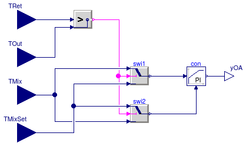
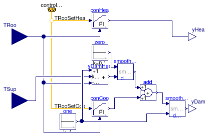

Package with controller models
Information
Extends from Modelica.Icons.VariantsPackage (Icon for package containing variants).
Package Content
Types and constants
type OperationModes = enumeration(
occupied "Occupied",
unoccupiedOff "Unoccupied off",
unoccupiedNightSetBack "Unoccupied, night set back",
unoccupiedWarmUp "Unoccupied, warm-up",
unoccupiedPreCool "Unoccupied, pre-cool",
safety "Safety (smoke, fire, etc.)") "Enumeration for modes of operation";
Empty control bus that is adapted to the signals connected to it

Information
This connector defines the expandable connector ControlBus that
is used to connect control signals.
Note, this connector is empty. When using it, the actual content is
constructed by the signals connected to this bus.
Extends from Modelica.Icons.SignalBus (Icon for signal bus).
Modelica definition
expandable connector ControlBus
"Empty control bus that is adapted to the signals connected to it"
extends Modelica.Icons.SignalBus;
end ControlBus;
Set point scheduler for cooling coil

Information
Extends from Modelica.Blocks.Icons.Block (Basic graphical layout of input/output block).
Parameters
| Type | Name | Default | Description |
|---|
| Temperature | TCooOn | 273.15 + 12 | Cooling setpoint during on [K] |
| Temperature | TCooOff | 273.15 + 30 | Cooling setpoint during off [K] |
Connectors
Modelica definition
Computes the duct static pressure setpoint

Information
Extends from Modelica.Blocks.Interfaces.MISO (Multiple Input Single Output continuous control block).
Parameters
| Type | Name | Default | Description |
|---|
| Integer | nin | 1 | Number of inputs |
| AbsolutePressure | pMin | 100 | Minimum duct static pressure setpoint [Pa] |
| AbsolutePressure | pMax | 410 | Maximum duct static pressure setpoint [Pa] |
| Real | k | 0.1 | Gain of controller |
| Time | Ti | 60 | Time constant of Integrator block [s] |
| Time | Td | 60 | Time constant of Derivative block [s] |
| SimpleController | controllerType | Modelica.Blocks.Types.Simple... | Type of controller |
Connectors
| Type | Name | Description |
|---|
| input RealInput | u[nin] | Connector of Real input signals |
| output RealOutput | y | Connector of Real output signal |
| input RealInput | TOut | Outside air temperature |
Modelica definition
model DuctStaticPressureSetpoint
"Computes the duct static pressure setpoint"
extends Modelica.Blocks.Interfaces.MISO;
parameter Modelica.SIunits.AbsolutePressure pMin(displayUnit="Pa") = 100
"Minimum duct static pressure setpoint";
parameter Modelica.SIunits.AbsolutePressure pMax(displayUnit="Pa") = 410
"Maximum duct static pressure setpoint";
parameter Real k=0.1
"Gain of controller";
parameter Modelica.SIunits.Time Ti=60
"Time constant of Integrator block";
parameter Modelica.SIunits.Time Td=60
"Time constant of Derivative block";
parameter Modelica.Blocks.Types.SimpleController controllerType=Modelica.Blocks.Types.SimpleController.PID
"Type of controller";
Buildings.Controls.Continuous.LimPID limPID(
controllerType=controllerType,
k=k,
Ti=Ti,
Td=Td,
initType=Modelica.Blocks.Types.InitPID.InitialState,
reverseAction=true);
protected
Buildings.Utilities.Math.Max max(
final nin=nin);
Modelica.Blocks.Sources.Constant ySet(k=0.9)
"Setpoint for maximum damper position";
Modelica.Blocks.Math.Add dp(
final k2=-1)
"Pressure difference";
Modelica.Blocks.Sources.Constant pMaxSig(k=pMax);
Modelica.Blocks.Sources.Constant pMinSig(k=pMin);
Modelica.Blocks.Math.Add pSet
"Pressure setpoint";
Modelica.Blocks.Math.Product product;
public
Modelica.Blocks.Logical.Hysteresis hysteresis(uLow=283.15, uHigh=284.15)
"Hysteresis to put fan on minimum revolution";
Modelica.Blocks.Interfaces.RealInput TOut
"Outside air temperature";
protected
Modelica.Blocks.Sources.Constant zero(k=0)
"Zero output signal";
public
Modelica.Blocks.Logical.Switch switch1;
equation
connect(max.u, u);
connect(ySet.y, limPID.u_s);
connect(max.y, limPID.u_m);
connect(limPID.y, product.u1);
connect(pMaxSig.y, dp.u1);
connect(pMinSig.y, dp.u2);
connect(dp.y, product.u2);
connect(pMinSig.y, pSet.u2);
connect(pSet.y, y);
connect(hysteresis.u, TOut);
connect(product.y, switch1.u1);
connect(zero.y, switch1.u3);
connect(switch1.y, pSet.u1);
connect(hysteresis.y, switch1.u2);
end DuctStaticPressureSetpoint;
Controller for economizer

Parameters
| Type | Name | Default | Description |
|---|
| TemperatureDifference | dT | 1 | Temperture offset to activate economizer [K] |
| VolumeFlowRate | VOut_flow_min | | Minimum outside air volume flow rate [m3/s] |
| Real | k | 1 | Gain of controller |
| Time | Ti | | Time constant of Integrator block [s] |
Connectors
| Type | Name | Description |
|---|
| input RealInput | TSupHeaSet | Supply temperature setpoint for heating |
| input RealInput | TSupCooSet | Supply temperature setpoint for cooling |
| input RealInput | TMix | Measured mixed air temperature |
| ControlBus | controlBus | |
| input RealInput | VOut_flow | Measured outside air flow rate |
| input RealInput | TRet | Return air temperature |
| output RealOutput | yOA | Control signal for outside air damper |
Modelica definition
block Economizer
"Controller for economizer"
import Buildings.Examples.VAVReheat.Controls.OperationModes;
parameter Modelica.SIunits.TemperatureDifference dT(min=0.1)= 1
"Temperture offset to activate economizer";
parameter Modelica.SIunits.VolumeFlowRate VOut_flow_min(min=0)
"Minimum outside air volume flow rate";
Modelica.Blocks.Interfaces.RealInput TSupHeaSet
"Supply temperature setpoint for heating";
Modelica.Blocks.Interfaces.RealInput TSupCooSet
"Supply temperature setpoint for cooling";
Modelica.Blocks.Interfaces.RealInput TMix
"Measured mixed air temperature";
ControlBus controlBus;
Modelica.Blocks.Interfaces.RealInput VOut_flow
"Measured outside air flow rate";
Modelica.Blocks.Interfaces.RealInput TRet
"Return air temperature";
Modelica.Blocks.Math.Gain gain(k=1/VOut_flow_min)
"Normalize mass flow rate";
Buildings.Controls.Continuous.LimPID conV_flow(
controllerType=Modelica.Blocks.Types.SimpleController.PI,
k=k,
Ti=Ti,
yMax=0.995,
yMin=0.005,
Td=60)
"Controller for outside air flow rate";
Modelica.Blocks.Sources.Constant uni(k=1)
"Unity signal";
parameter Real k=1
"Gain of controller";
parameter Modelica.SIunits.Time Ti
"Time constant of Integrator block";
Modelica.Blocks.Interfaces.RealOutput yOA
"Control signal for outside air damper";
Modelica.Blocks.Routing.Extractor extractor(
nin=6,
index(start=1, fixed=true))
"Extractor for control signal";
Modelica.Blocks.Sources.Constant closed(k=0)
"Signal to close OA damper";
Modelica.Blocks.Math.Max max
"Takes bigger signal (OA damper opens for temp. control or for minimum outside air)";
MixedAirTemperatureSetpoint TSetMix
"Mixed air temperature setpoint";
EconomizerTemperatureControl yOATMix(Ti=Ti, k=k)
"Control signal for outdoor damper to track mixed air temperature setpoint";
EconomizerTemperatureControl yOATFre(Ti=Ti, k=k)
"Control signal for outdoor damper to track freeze temperature setpoint";
Modelica.Blocks.Math.Min min
"Takes bigger signal (OA damper opens for temp. control or for minimum outside air)";
Modelica.Blocks.Sources.Constant TFre(k=273.15 + 3)
"Setpoint for freeze protection";
equation
connect(VOut_flow, gain.u);
connect(gain.y, conV_flow.u_m);
connect(uni.y, conV_flow.u_s);
connect(controlBus.controlMode, extractor.index);
connect(max.y, extractor.u[OperationModes.occupied]);
connect(closed.y, extractor.u[OperationModes.unoccupiedOff]);
connect(closed.y, extractor.u[OperationModes.unoccupiedNightSetBack]);
connect(max.y, extractor.u[OperationModes.unoccupiedWarmUp]);
connect(max.y, extractor.u[OperationModes.unoccupiedPreCool]);
connect(closed.y, extractor.u[OperationModes.safety]);
connect(TSupHeaSet, TSetMix.TSupHeaSet);
connect(TSupCooSet, TSetMix.TSupCooSet);
connect(controlBus, TSetMix.controlBus);
connect(yOATMix.TRet, TRet);
connect(controlBus.TOut, yOATMix.TOut);
connect(yOATMix.TMix, TMix);
connect(yOATMix.TMixSet, TSetMix.TSet);
connect(yOATMix.yOA, max.u1);
connect(min.u2, conV_flow.y);
connect(min.y, max.u2);
connect(min.u1, yOATFre.yOA);
connect(yOATFre.TRet, TRet);
connect(controlBus.TOut, yOATFre.TOut);
connect(yOATFre.TMix, TMix);
connect(TFre.y, yOATFre.TMixSet);
connect(extractor.y, yOA);
end Economizer;
Controller for economizer mixed air temperature

Information
Extends from Modelica.Blocks.Icons.Block (Basic graphical layout of input/output block).
Parameters
| Type | Name | Default | Description |
|---|
| Real | k | 1 | Gain of controller |
| Time | Ti | | Time constant of Integrator block [s] |
Connectors
| Type | Name | Description |
|---|
| output RealOutput | yOA | Control signal for outside air damper |
| input RealInput | TRet | Return air temperature |
| input RealInput | TOut | Outside air temperature |
| input RealInput | TMix | Mixed air temperature |
| input RealInput | TMixSet | Setpoint for mixed air temperature |
Modelica definition
block EconomizerTemperatureControl
"Controller for economizer mixed air temperature"
extends Modelica.Blocks.Icons.Block;
import Buildings.Examples.VAVReheat.Controls.OperationModes;
Buildings.Controls.Continuous.LimPID con(
k=k,
Ti=Ti,
yMax=0.995,
yMin=0.005,
Td=60,
controllerType=Modelica.Blocks.Types.SimpleController.PI)
"Controller for mixed air temperature";
parameter Real k=1
"Gain of controller";
parameter Modelica.SIunits.Time Ti
"Time constant of Integrator block";
Modelica.Blocks.Logical.Greater signGain
"Sign of control gain";
Modelica.Blocks.Logical.Switch swi1;
Modelica.Blocks.Logical.Switch swi2;
Modelica.Blocks.Interfaces.RealOutput yOA
"Control signal for outside air damper";
Modelica.Blocks.Interfaces.RealInput TRet
"Return air temperature";
Modelica.Blocks.Interfaces.RealInput TOut
"Outside air temperature";
Modelica.Blocks.Interfaces.RealInput TMix
"Mixed air temperature";
Modelica.Blocks.Interfaces.RealInput TMixSet
"Setpoint for mixed air temperature";
equation
connect(signGain.y, swi1.u2);
connect(swi1.y, con.u_s);
connect(swi2.y, con.u_m);
connect(signGain.y, swi2.u2);
connect(con.y, yOA);
connect(signGain.u1, TRet);
connect(signGain.u2, TOut);
connect(swi1.u1, TMix);
connect(swi2.u3, TMix);
connect(swi1.u3, TMixSet);
connect(swi2.u1, TMixSet);
end EconomizerTemperatureControl;
Controller for fan revolution

Information
Extends from Modelica.Blocks.Interfaces.SISO (Single Input Single Output continuous control block).
Parameters
| Type | Name | Default | Description |
|---|
| Real | xSet_nominal | | Nominal setpoint (used for normalization) |
| Real | r_N_min | 0.01 | Minimum normalized fan speed |
| Init | initType | Modelica.Blocks.Types.Init.N... | Type of initialization (1: no init, 2: steady state, 3/4: initial output) |
| Real | y_start | 0 | Initial or guess value of output (= state) |
| Setpoint tracking |
| SimpleController | controllerType | .Modelica.Blocks.Types.Simpl... | Type of controller |
| Real | k | 0.5 | Gain of controller |
| Time | Ti | 15 | Time constant of Integrator block [s] |
Connectors
| Type | Name | Description |
|---|
| input RealInput | u | Connector of Real input signal |
| output RealOutput | y | Connector of Real output signal |
| ControlBus | controlBus | |
| input RealInput | u_m | Connector of measurement input signal |
Modelica definition
block FanVFD
"Controller for fan revolution"
extends Modelica.Blocks.Interfaces.SISO;
import Buildings.Examples.VAVReheat.Controls.OperationModes;
Buildings.Controls.Continuous.LimPID con(
yMax=1,
Td=60,
yMin=r_N_min,
k=k,
Ti=Ti,
controllerType=controllerType)
"Controller";
Modelica.Blocks.Math.Gain gaiMea(k=1/xSet_nominal)
"Gain to normalize measurement signal";
parameter Real xSet_nominal
"Nominal setpoint (used for normalization)";
ControlBus controlBus;
Modelica.Blocks.Routing.Extractor extractor(
nin=6,
index(start=1, fixed=true))
"Extractor for control signal";
Modelica.Blocks.Sources.Constant off(k=0)
"Off signal";
Modelica.Blocks.Sources.Constant on(k=1)
"On signal";
Modelica.Blocks.Math.Gain gaiSet(k=1/xSet_nominal)
"Gain to normalize setpoint signal";
Modelica.Blocks.Interfaces.RealInput u_m
"Connector of measurement input signal";
parameter Real r_N_min=0.01
"Minimum normalized fan speed";
parameter Modelica.Blocks.Types.Init initType=Modelica.Blocks.Types.Init.NoInit
"Type of initialization (1: no init, 2: steady state, 3/4: initial output)";
parameter Real y_start=0
"Initial or guess value of output (= state)";
parameter Modelica.Blocks.Types.SimpleController
controllerType=.Modelica.Blocks.Types.SimpleController.PI
"Type of controller";
parameter Real k=0.5
"Gain of controller";
parameter Modelica.SIunits.Time Ti=15
"Time constant of Integrator block";
equation
connect(gaiMea.y, con.u_m);
connect(con.y, extractor.u[OperationModes.occupied]);
connect(con.y, extractor.u[OperationModes.unoccupiedWarmUp]);
connect(con.y, extractor.u[OperationModes.unoccupiedPreCool]);
connect(off.y, extractor.u[OperationModes.unoccupiedOff]);
connect(off.y, extractor.u[OperationModes.safety]);
connect(on.y, extractor.u[OperationModes.unoccupiedNightSetBack]);
connect(controlBus.controlMode, extractor.index);
connect(gaiSet.y, con.u_s);
connect(u_m, gaiMea.u);
connect(gaiSet.u, u);
connect(extractor.y, y);
end FanVFD;
Mixed air temperature setpoint for economizer

Information
Extends from Modelica.Blocks.Icons.Block (Basic graphical layout of input/output block).
Connectors
| Type | Name | Description |
|---|
| input RealInput | TSupHeaSet | Supply temperature setpoint for heating |
| input RealInput | TSupCooSet | Supply temperature setpoint for cooling |
| ControlBus | controlBus | |
| output RealOutput | TSet | Mixed air temperature setpoint |
Modelica definition
model MixedAirTemperatureSetpoint
"Mixed air temperature setpoint for economizer"
extends Modelica.Blocks.Icons.Block;
Modelica.Blocks.Routing.Extractor TSetMix(
nin=6,
index(start=1, fixed=true))
"Mixed air setpoint temperature extractor";
Modelica.Blocks.Sources.Constant off(k=273.15 + 13)
"Setpoint temperature to close damper";
Buildings.Utilities.Math.Average ave(nin=2);
Modelica.Blocks.Interfaces.RealInput TSupHeaSet
"Supply temperature setpoint for heating";
Modelica.Blocks.Interfaces.RealInput TSupCooSet
"Supply temperature setpoint for cooling";
Modelica.Blocks.Sources.Constant TPreCoo(k=273.15 + 13)
"Setpoint during pre-cooling";
ControlBus controlBus;
Modelica.Blocks.Interfaces.RealOutput TSet
"Mixed air temperature setpoint";
Modelica.Blocks.Routing.Multiplex2 multiplex2_1;
equation
connect(TSetMix.u[1], ave.y);
connect(ave.y, TSetMix.u[1]);
connect(off.y, TSetMix.u[2]);
connect(off.y, TSetMix.u[3]);
connect(off.y, TSetMix.u[4]);
connect(TPreCoo.y, TSetMix.u[5]);
connect(off.y, TSetMix.u[6]);
connect(controlBus.controlMode, TSetMix.index);
connect(TSetMix.y, TSet);
connect(multiplex2_1.y, ave.u);
connect(TSupCooSet, multiplex2_1.u2[1]);
connect(TSupHeaSet, multiplex2_1.u1[1]);
end MixedAirTemperatureSetpoint;
Finite State Machine for the operational modes

Parameters
| Type | Name | Default | Description |
|---|
| TemperatureDifference | delTRooOnOff | 1 | Deadband in room temperature between occupied on and occupied off [K] |
| Temperature | TRooSetHeaOcc | 293.15 | Set point for room air temperature during heating mode [K] |
| Temperature | TRooSetCooOcc | 299.15 | Set point for room air temperature during cooling mode [K] |
| Temperature | TSetHeaCoiOut | 303.15 | Set point for air outlet temperature at central heating coil [K] |
Connectors
Modelica definition
model ModeSelector
"Finite State Machine for the operational modes"
Modelica.StateGraph.InitialStep initialStep;
Modelica.StateGraph.Transition start
"Starts the system";
State unOccOff(
mode=Buildings.Examples.VAVReheat.Controls.OperationModes.unoccupiedOff,
nIn=3,
nOut=4)
"Unoccupied off mode, no coil protection";
State unOccNigSetBac(
nOut=2,
mode=Buildings.Examples.VAVReheat.Controls.OperationModes.unoccupiedNightSetBack,
nIn=1)
"Unoccupied night set back";
Modelica.StateGraph.Transition t2(
enableTimer=true,
waitTime=60,
condition=TRooMinErrHea.y > delTRooOnOff/2);
parameter Modelica.SIunits.TemperatureDifference delTRooOnOff(min=0.1)=1
"Deadband in room temperature between occupied on and occupied off";
parameter Modelica.SIunits.Temperature TRooSetHeaOcc=293.15
"Set point for room air temperature during heating mode";
parameter Modelica.SIunits.Temperature TRooSetCooOcc=299.15
"Set point for room air temperature during cooling mode";
parameter Modelica.SIunits.Temperature TSetHeaCoiOut=303.15
"Set point for air outlet temperature at central heating coil";
Modelica.StateGraph.Transition t1(condition=delTRooOnOff/2 < -TRooMinErrHea.y,
enableTimer=true,
waitTime=30*60);
inner Modelica.StateGraph.StateGraphRoot stateGraphRoot;
ControlBus cb;
Modelica.Blocks.Routing.RealPassThrough TRooSetHea
"Current heating setpoint temperature";
State morWarUp(mode=Buildings.Examples.VAVReheat.Controls.OperationModes.unoccupiedWarmUp,
nIn=2,
nOut=1)
"Morning warm up";
Modelica.StateGraph.TransitionWithSignal t6(enableTimer=true, waitTime=60);
Modelica.Blocks.Logical.LessEqualThreshold occThrSho(threshold=1800)
"Signal to allow transition into morning warmup";
Modelica.StateGraph.TransitionWithSignal t5;
State occ( mode=Buildings.Examples.VAVReheat.Controls.OperationModes.occupied,
nIn=3)
"Occupied mode";
Modelica.Blocks.Routing.RealPassThrough TRooMin;
Modelica.Blocks.Math.Feedback TRooMinErrHea
"Room control error for heating";
Modelica.StateGraph.Transition t3(condition=TRooMin.y + delTRooOnOff/2 >
TRooSetHeaOcc
or occupied.y);
Modelica.Blocks.Routing.BooleanPassThrough occupied
"outputs true if building is occupied";
Modelica.StateGraph.TransitionWithSignal t4(enableTimer=false);
State morPreCoo( nIn=2,
mode=Buildings.Examples.VAVReheat.Controls.OperationModes.unoccupiedPreCool,
nOut=1)
"Pre-cooling mode";
Modelica.StateGraph.Transition t7(condition=TRooMin.y - delTRooOnOff/2 <
TRooSetCooOcc
or occupied.y);
Modelica.Blocks.Logical.And and1;
Modelica.Blocks.Routing.RealPassThrough TRooAve
"Average room temperature";
Modelica.Blocks.Sources.BooleanExpression booleanExpression(y=TRooAve.y <
TRooSetCooOcc);
PreCoolingStarter preCooSta(TRooSetCooOcc=TRooSetCooOcc)
"Model to start pre-cooling";
Modelica.StateGraph.TransitionWithSignal t9;
Modelica.Blocks.Logical.Not not1;
Modelica.Blocks.Logical.And and2;
Modelica.Blocks.Logical.Not not2;
Modelica.StateGraph.TransitionWithSignal t8
"changes to occupied in case precooling is deactivated";
Modelica.Blocks.MathInteger.Sum sum(nu=5);
equation
connect(start.outPort, unOccOff.inPort[1]);
connect(initialStep.outPort[1], start.inPort);
connect(unOccOff.outPort[1], t2.inPort);
connect(t2.outPort, unOccNigSetBac.inPort[1]);
connect(unOccNigSetBac.outPort[1], t1.inPort);
connect(t1.outPort, unOccOff.inPort[2]);
connect(cb.dTNexOcc, occThrSho.u);
connect(t6.outPort, morWarUp.inPort[1]);
connect(t5.outPort, morWarUp.inPort[2]);
connect(unOccNigSetBac.outPort[2], t5.inPort);
connect(cb.TRooMin, TRooMin.u);
connect(TRooSetHea.y, TRooMinErrHea.u1);
connect(TRooMin.y, TRooMinErrHea.u2);
connect(unOccOff.outPort[2], t6.inPort);
connect(morWarUp.outPort[1], t3.inPort);
connect(cb.occupied, occupied.u);
connect(occ.outPort[1], t4.inPort);
connect(t4.outPort, unOccOff.inPort[3]);
connect(occThrSho.y, and1.u1);
connect(and1.y, t6.condition);
connect(and1.y, t5.condition);
connect(cb.TRooAve, TRooAve.u);
connect(booleanExpression.y, and1.u2);
connect(preCooSta.y, t9.condition);
connect(t9.outPort, morPreCoo.inPort[1]);
connect(unOccOff.outPort[3], t9.inPort);
connect(cb, preCooSta.controlBus);
connect(morPreCoo.outPort[1], t7.inPort);
connect(t7.outPort, occ.inPort[2]);
connect(t3.outPort, occ.inPort[1]);
connect(occThrSho.y, not1.u);
connect(not1.y, and2.u2);
connect(and2.y, t4.condition);
connect(occupied.y, not2.u);
connect(not2.y, and2.u1);
connect(cb.TRooSetHea, TRooSetHea.u);
connect(t8.outPort, occ.inPort[3]);
connect(unOccOff.outPort[4], t8.inPort);
connect(occupied.y, t8.condition);
connect(morPreCoo.y, sum.u[1]);
connect(morWarUp.y, sum.u[2]);
connect(occ.y, sum.u[3]);
connect(unOccOff.y, sum.u[4]);
connect(unOccNigSetBac.y, sum.u[5]);
connect(sum.y, cb.controlMode);
end ModeSelector;
Outputs true when precooling should start

Information
Extends from Modelica.Blocks.Interfaces.BooleanSignalSource (Base class for Boolean signal sources).
Parameters
| Type | Name | Default | Description |
|---|
| Temperature | TOutLim | 286.15 | Limit for activating precooling [K] |
| Temperature | TRooSetCooOcc | | Set point for room air temperature during cooling mode [K] |
Connectors
Modelica definition
Set point scheduler for room temperature

Information
Extends from Modelica.Blocks.Icons.Block (Basic graphical layout of input/output block).
Parameters
| Type | Name | Default | Description |
|---|
| Temperature | THeaOn | 293.15 | Heating setpoint during on [K] |
| Temperature | THeaOff | 285.15 | Heating setpoint during off [K] |
| Temperature | TCooOn | 297.15 | Cooling setpoint during on [K] |
| Temperature | TCooOff | 303.15 | Cooling setpoint during off [K] |
Connectors
Modelica definition
Controller for room VAV box

Information
Extends from Modelica.Blocks.Icons.Block (Basic graphical layout of input/output block).
Parameters
| Type | Name | Default | Description |
|---|
| Real | kPDamHea | 0.5 | Proportional gain for VAV damper in heating mode |
Connectors
| Type | Name | Description |
|---|
| ControlBus | controlBus | |
| input RealInput | TRoo | Measured room temperature [K] |
| output RealOutput | yHea | Signal for heating coil valve |
| output RealOutput | yDam | Signal for VAV damper |
| input RealInput | TSup | Measured supply air temperature after heating coil |
Modelica definition
block RoomVAV
"Controller for room VAV box"
extends Modelica.Blocks.Icons.Block;
parameter Real kPDamHea = 0.5
"Proportional gain for VAV damper in heating mode";
Buildings.Controls.Continuous.LimPID conHea(
yMax=1,
xi_start=0.1,
initType=Modelica.Blocks.Types.InitPID.InitialState,
Td=60,
yMin=0,
controllerType=Modelica.Blocks.Types.SimpleController.PI,
k=0.1,
Ti=120)
"Controller for heating";
Buildings.Controls.Continuous.LimPID conCoo(
yMax=1,
reverseAction=true,
Td=60,
controllerType=Modelica.Blocks.Types.SimpleController.PI,
k=0.1,
Ti=120)
"Controller for cooling (acts on damper)";
ControlBus controlBus;
Modelica.Blocks.Interfaces.RealInput TRoo(
final quantity="ThermodynamicTemperature",
final unit = "K", displayUnit = "degC", min=0)
"Measured room temperature";
Modelica.Blocks.Interfaces.RealOutput yHea
"Signal for heating coil valve";
Modelica.Blocks.Interfaces.RealOutput yDam
"Signal for VAV damper";
Modelica.Blocks.Interfaces.RealInput TSup(displayUnit="degC")
"Measured supply air temperature after heating coil";
Buildings.Utilities.Math.SmoothMax smoothMax2(deltaX=0.1);
Modelica.Blocks.Sources.Constant one(k=1);
Modelica.Blocks.Math.Add3 yDamHea(k2=kPDamHea, k3=-kPDamHea)
"Outputs (unlimited) damper signal for heating.";
Modelica.Blocks.Math.Add add;
Modelica.Blocks.Sources.Constant zero(k=0.1);
Buildings.Utilities.Math.SmoothMin smoothMin(deltaX=0.1);
equation
connect(controlBus.TRooSetHea, conHea.u_s);
connect(controlBus.TRooSetCoo, conCoo.u_s);
connect(conHea.u_m, TRoo);
connect(conCoo.u_m, TRoo);
connect(TRoo, yDamHea.u3);
connect(yDamHea.u2, TSup);
connect(one.y, yDamHea.u1);
connect(conCoo.y, add.u2);
connect(yDamHea.y, smoothMax2.u2);
connect(smoothMax2.y, add.u1);
connect(zero.y, smoothMax2.u1);
connect(smoothMin.u1, add.y);
connect(one.y, smoothMin.u2);
connect(conHea.y, yHea);
connect(smoothMin.y, yDam);
end RoomVAV;
Block that outputs the mode if the state is active, or zero otherwise

Information
Extends from Modelica.StateGraph.StepWithSignal (Ordinary step (= step that is not active when simulation starts). Connector 'active' is true when the step is active).
Parameters
| Type | Name | Default | Description |
|---|
| Integer | nIn | 1 | Number of input connections |
| Integer | nOut | 1 | Number of output connections |
| OperationModes | mode | | Enter enumeration of mode |
Connectors
Modelica definition
Automatically generated Mon Jul 13 14:36:02 2015.
 Buildings.Examples.VAVReheat.Controls.ControlBus
Buildings.Examples.VAVReheat.Controls.ControlBus Buildings.Examples.VAVReheat.Controls.CoolingCoilTemperatureSetpoint
Buildings.Examples.VAVReheat.Controls.CoolingCoilTemperatureSetpoint Buildings.Examples.VAVReheat.Controls.DuctStaticPressureSetpoint
Buildings.Examples.VAVReheat.Controls.DuctStaticPressureSetpoint Buildings.Examples.VAVReheat.Controls.Economizer
Buildings.Examples.VAVReheat.Controls.Economizer Buildings.Examples.VAVReheat.Controls.EconomizerTemperatureControl
Buildings.Examples.VAVReheat.Controls.EconomizerTemperatureControl Buildings.Examples.VAVReheat.Controls.FanVFD
Buildings.Examples.VAVReheat.Controls.FanVFD Buildings.Examples.VAVReheat.Controls.MixedAirTemperatureSetpoint
Buildings.Examples.VAVReheat.Controls.MixedAirTemperatureSetpoint Buildings.Examples.VAVReheat.Controls.ModeSelector
Buildings.Examples.VAVReheat.Controls.ModeSelector Buildings.Examples.VAVReheat.Controls.PreCoolingStarter
Buildings.Examples.VAVReheat.Controls.PreCoolingStarter Buildings.Examples.VAVReheat.Controls.RoomTemperatureSetpoint
Buildings.Examples.VAVReheat.Controls.RoomTemperatureSetpoint Buildings.Examples.VAVReheat.Controls.RoomVAV
Buildings.Examples.VAVReheat.Controls.RoomVAV Buildings.Examples.VAVReheat.Controls.State
Buildings.Examples.VAVReheat.Controls.State